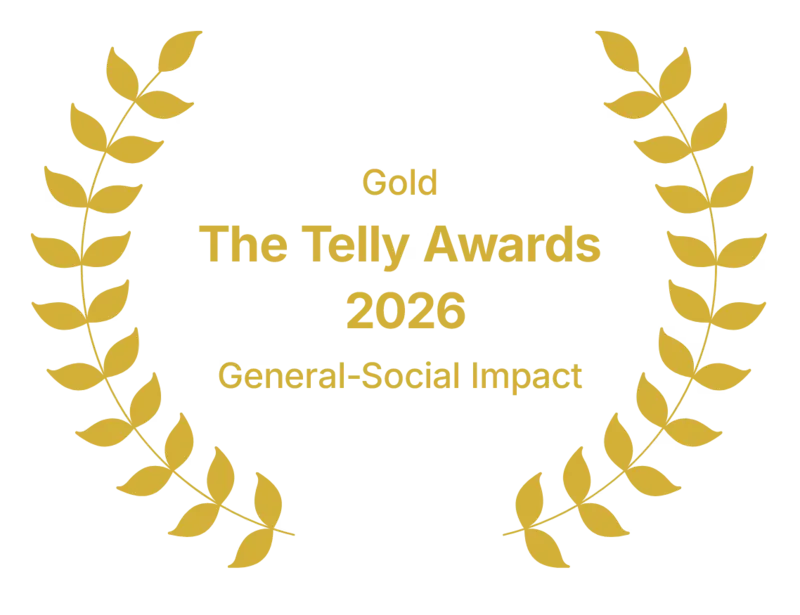
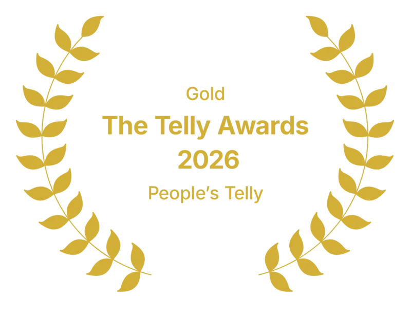
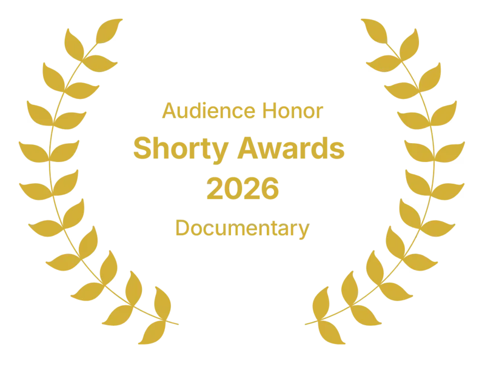
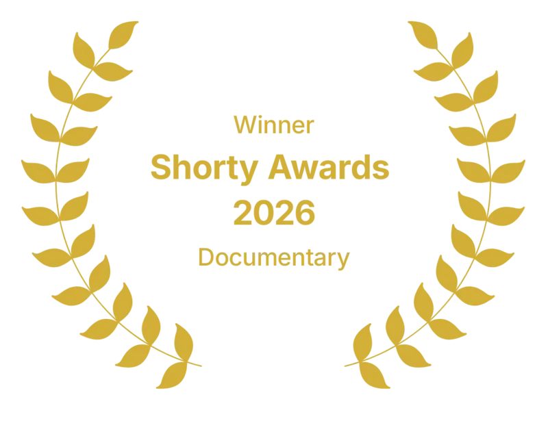
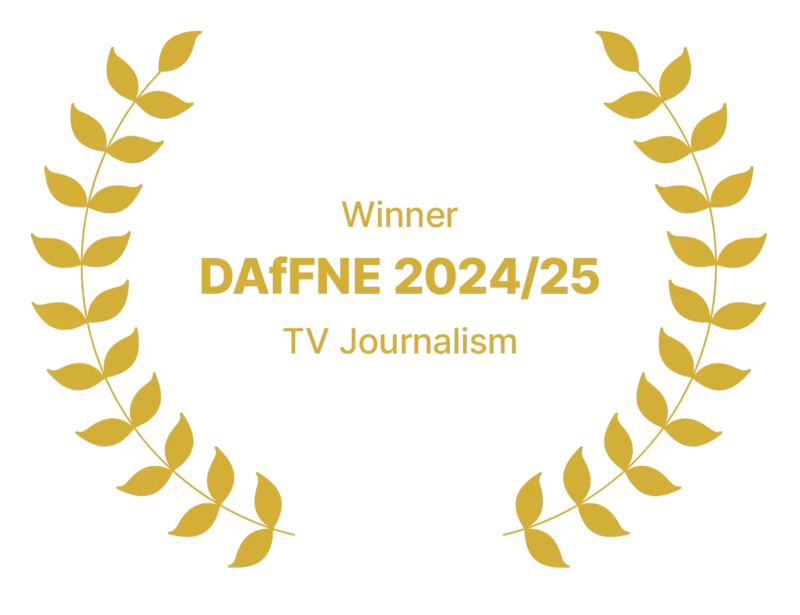

fern. Video Journalism, Redefined
YouTube outlet reaching over
5 million subscribers.
Video Journalism, Redefined
Born in 2023.
About us
We believe video is the future of journalism: a way to reach audiences beyond traditional media and deliver in-depth reporting in an increasingly brutal war for attention.
Our work began with animation, using it to visualize complex information and tell important stories that are otherwise hard to convey. Since then, we have expanded that approach to include investigative on-the-ground reporting and in-person interviews.
The channel was originally founded by the team behind Simplicissimus and Hoog. Hoog has since stepped away to focus on other projects, aside from occasional voice-over work. While we maintain an office in Amsterdam, our team is spread across Europe. Today, around 100 people work across our channels and podcast, which for now is available only in German. You can meet many of our core team members below. We’ve partnered with Electrify since January 2025.

Our German outlets
 Simplicissimus210k
Simplicissimus210k Simplicissimus190k
Simplicissimus190k Simplicissimus2.3 Mil
Simplicissimus2.3 Mil
We worked with
Great Reporting, On Youtube
In recent years, we’ve been fortunate to work with several acclaimed outlets and journalists. Our videos amplify their stories, highlight their reporting, and deliver them to new audiences.
Let’s collaborate


- DavidCo-Founder
- JonasAlso Co-Founder
- Paul LühnsdorfExecutive Producer
- Cristian KieslingExecutive Producer
- Chris VargaSenior Editor-in-Chief
- Jonas RumpSenior Editor-in-Chief
- Lucie SchönerJunior Editor-in-Chief
- Mona SchierSenior Producer
- ElmerNarrator
- Nora FrieseArt Director
- Thomas OverbeekeArt Director & Senior 3D Animator
- Marcel Becker-NeuArt Director & Video Editor
- Lucas BardicArt Director
- PhilippArt Director
- Nikki ZeinarHead of Design
- JuliaSenior Writer
- MarcelSenior Writer & Narrator (Simpli)
- Aaron MuckeSenior Writer
- NinaSenior Writer
- MarlonWriter
- DonWriter & Narrator
- Bao-My NguyenWriter
- Alex López CastroTranslator & Writer
- Gereon WahleWriter & Set Designer
- Brian DooseWriter
- Finn WalterWriter
- YannicResearcher
- Lisa OssenbrinkWriter
- KristinaTranslator
- Valentin MackeReporter
- Pascale MüllerHead of Fact-Checking
- Marlene HalserFact-checker
- Franziska WunderlichFact-checker
- Sabina ZollnerFact-checker
- Lisa Victoria PeterFact-checker
- Vera HartliebProduction Coordinator
- Alejandro Camacho DíazVideo Editor
- Suraj ChandranVideo Editor
- Simon VoppmannVideo Editor
- Timo SellVideo Editor
- Tom BüscherVideo Editor
- Bernd MSC SchroersVideo Editor
- Aron Krause-ArltVideo Editor
- Fabian BienVideo Editor
- Maurice DemandtVideo Editor
- Max WeisVideo Editor
- Lenz SchölerSenior 3D Animator
- Mel Wagner3D Animator
- Leonard Flohr3D Animator
- Sidney Heaney3D Animator
- Aziz Dereli3D Animator
- Lucas Göhr3D Animator
- Nil Tomm3D Animator
- Nikolai Nordmann3D Animator
- Ben Sommerhäuser3D Animator
- Killian van Basten3D Animator
- Victor Schroers3D Animator
- Mathias Hawk2D Motion Designer
- Marlene Sandmann2D Motion Designer
- Long Huy Dao2D Motion Designer
- Jakob Werner2D Motion Designer
- Dennis Gajdek2D Motion Designer
- Konne Fuchs2D Motion Designer
- Leo Sebastian Jung2D Motion Designer
- Lex Mittermiller2D Motion Designer
- Max Pregler2D Motion Designer
- Eddy Klaus2D Motion Designer
- Jakob Schöne2D Motion Designer
- Tim Verhaert2D Motion Designer
- Leo WangSound Designer
- Studio SomaAudio Engineers
- Alejandro Castellanos Paz3D Thumbnail Designer
- Anna MilkovicBrand Partnerships Senior Manager
- Yvonne ZimmerFinance Operations Manager
- John-Dustin Martin1UP Management
Awards
The team behind fern has been honored with several creative awards.
-

fern -

fern -

fern -

fern -

Simplicissimus - Simplicissimus
- Simplicissimus
Ready to reach millions?
Join usYour ad never looked this good.
About us and our partners
Every sponsor segment is custom-made, animated, and designed to be part of the episode itself by being directly written into the narrative. This makes our partnerships truly native.
Cinematic visuals, deep research and fact based storytelling by a team of journalists and creatives is what makes fern a trusted voice and a safe, high-quality environment for brand partners.
We partner with brands that value high production quality, thoughtful storytelling and an intelligent, curious audience.


Do you want to collaborate?
Get in touch with Anna...Working For Fern
We are always looking for talent. Check out our current open roles and come join the team.
Open Roles
There are currently no jobs available.
Get in touch.
Business enquires? Send us an email
FAQ
If you’re curious
Why are you called fern?
fern is a play on the German words “Fernweh” (a longing for distant places, or homesickness for a place you’ve never been) and “fernsehen” (to watch television). It’s also a plant in English, hence the green.
Who founded fern?
fern is the brainchild of German YouTubers David and Jonas (Simplicissimus, 2 Bored Guys), and Dutch YouTuber Hoog. He has since stepped back to focus on his main channel, but remains the voice behind some videos.
Why did you partner with Electrify?
In 2025, we took an investment from Electrify to stabilize the company and reduce the day-to-day operational load on the founders. That allowed us to grow the team and focus on making better videos than ever. Electrify isn’t involved in the creative process, and we remain editorially independent.
How do you handle generative AI?
We work with a team of dedicated 2D and 3D animators, and tend to use AI only in the background for non-creative tasks like upscaling, image extension, or file organization. Beyond legal and ethical questions, we believe people value work that other humans have put real care and intention into. We use generative AI only very selectively.